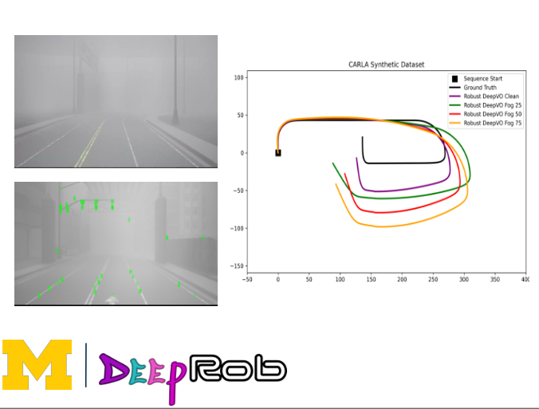
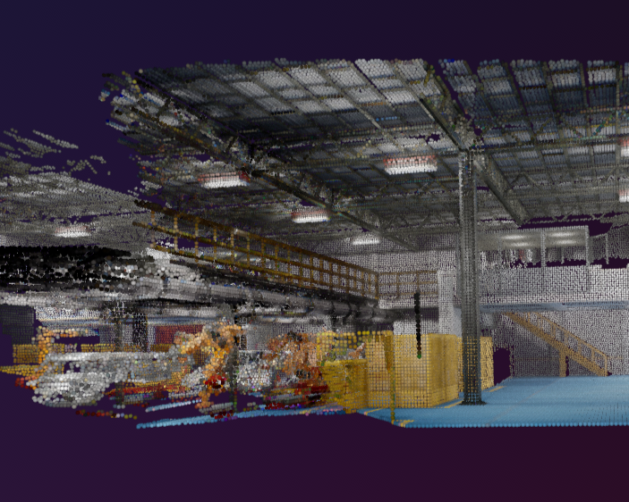

|
Raghav Mishra I'm a graduate from Univeristy of Michigan, Ann Arbor currently working on my startup Netted AI , where I lead a small team that mostly works on AI Inference and Hardware Native Optimizations. I've worked at Magna's, ADAS/autonmous driving team on ACC, Lane centering and change features. Before that i have worked in Varroc R&D, on ECU, Switch and sensors, IC and electrical-electronics Mfg as a part of GET Rotation program. During undergrad, i also did BAJA SAE as was the Vice-captain and tech lead for the team. |
{kind=link}
ResearchI'm interested in Deep learning, Efficient ML, differentiable Spatio-temporal representations. I like to think in SE(3) and some of the research work is highlighted. |
|

|
Robustness enhancement for deep learning base Visual Odometry
Yifeng Xu, Raghav Mishra arXiv, 2024 video / paper / code We generate a KITTI-formatted virtual dataset for data augmentation, propose an evaluation framework that systematically examines the robustness of the DeepVO performance and implement a novel inpainting modules to address the dynamic objects issues for a leaning-based VO system. |

|
NeRFs for All - A probe into the accessibility of NeRFs for Educational Use
Anmol Mansingh, Keagan Pinto, Raghav Mishra video / report A probe to InstantNGP’s COLMAP for enhanced camera parameter generation in our model and making NeRF technology more accessible to a broader user base on colab free tier. |
|

|
OP-LiMap: Optical Pruning based line mapping
Shlok Agarwal,Raghav Mishra,,Dylan Colli ,Saket Pradhan paper / code / poster / video Accurate mapping of dynamic environments is essential for robotics applications to navigate, manipulate objects, and understand scenes. Traditional mapping techniques, such as Simultaneous Localization and Mapping (SLAM), primarily focus on static environments, overlooking changes that occur overtime. However, in dynamic environments where objects move or change position, conventional mapping approaches may fail to capture these changes accurately, resulting in inconsistencies and errors in the map. To address this limitation, recent research has aimed to extend mapping techniques to accommodate dynamic scenes. LIMAP (3D Line Mapping) is a technique that employs lines to generate line maps of the environment, leveraging line segments in the image to encode scene layout. While LIMAP performs well on static environments, its effectiveness on dynamic scenes remains unverified. In this work, we propose an extension of LIMAP, termed ”OP-LIMAP,” to map dynamic scenes by incorporating optical flow information. |
|
|
Control a rear-wheel-drive front-wheel-steer bicycle model based on real Formula One car specifications using Matlab.
Raghav Mishra,, James Baxter,Elmer Robert Keach ,Eugene Kochergin In this work we designed control algorithm which minimizes a cost function interms of terminal time, control effort, and distance through the use of a short prediction horizon using Nonlinear MPC model. presentation / code |
Miscellanea |
Teaching |
Graduate Student Instructor, ISD 527 Design for Six Sigma winter 2024
Graduate Student Instructor, ISD 527 Design for Six Sigma winter 2023 |
|
Inspirations and code for this website were taken from Andrej Karpathy and Jon Barrons website.
|